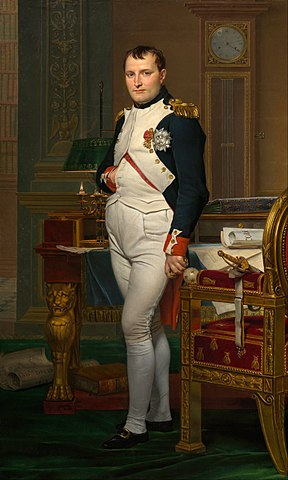
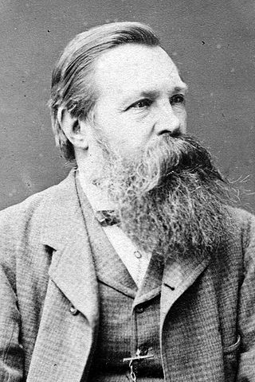
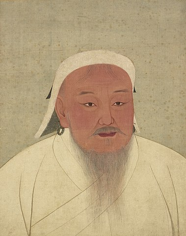
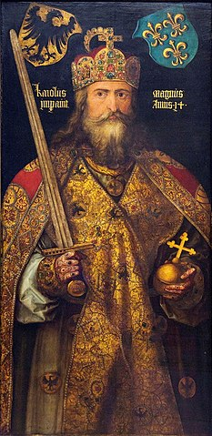
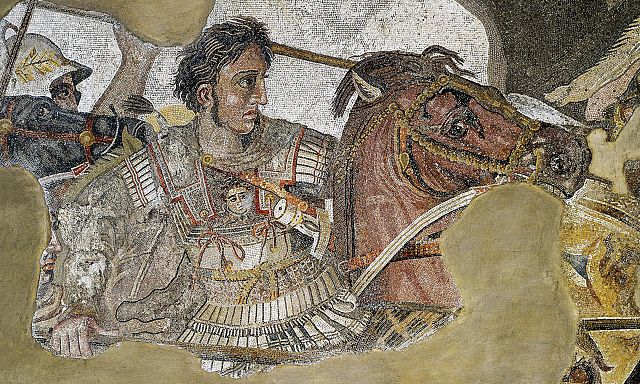

Zgadnij kim jest ta postać
Pytanie 1 z 6
Wskazówka:
- Napoleon I
- Aleksander I Romanow
- George Washington
Pytanie 2 z 6
Wskazówka: miał bardziej znanego kolegę.
- Otto von Bismarck
- Georges Clemenceau
- Friedrich Engels
Pytanie 3 z 6
Wskazówka: zjednoczył swój naród.
- Czyngis-chan
- Tamerlan
- Jumong
Pytanie 4 z 6
Wskazówka: załoźył imperium.
- Fryderyk II Hohenstauf
- Karol Wielki
- Pepin Krótki
Pytanie 5 z 6
Wskazówka: podbił Persję.
- Filip II Macedoński
- Leonidas I
- Aleksander Macedoński
Pytanie 6 z 6

Wskazówka:
- Josip Broz Tito
- Benito Mussolini
- Erich Honecker